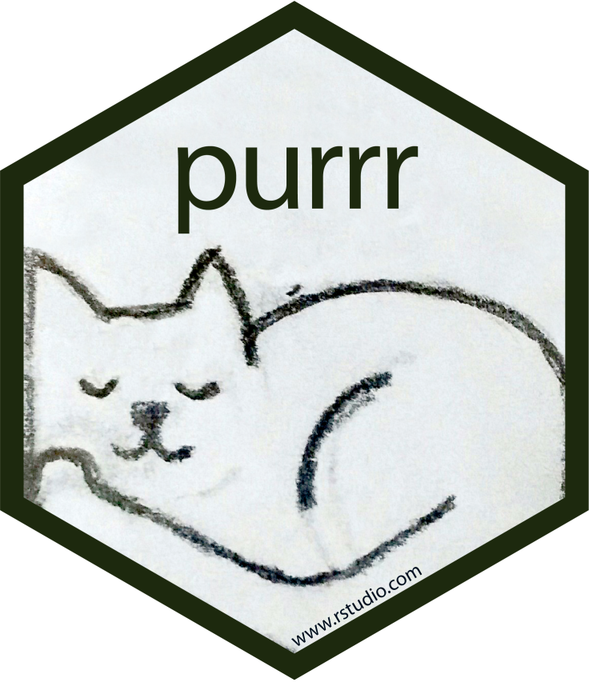
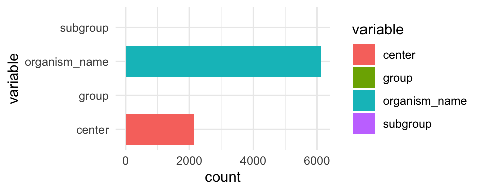
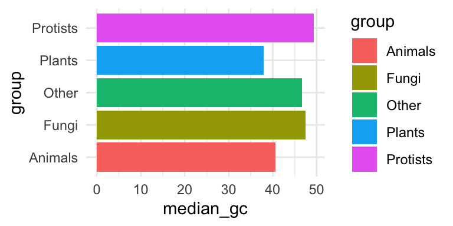
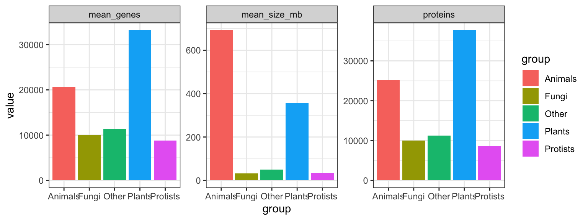
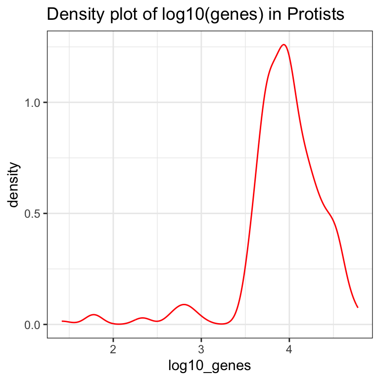

Kapital 7 Functional programming med purrr-pakken

“Den grundlæggende fordel ved data er, at de fortæller dig noget om verden, som du ikke vidste før.” – Hilary Mason
7.1 Inledning og læringsmålene
Når du arbejder med biologiske data, har du ofte mange datasæt – forskellige prøver, replikater eller batches – der alle skal igennem den samme analysepipeline. Ved at bruge funktionel programmering kan hvert trin pakkes ind i små, rene funktioner, hvilket øger både reproducerbarhed og gennemsigtighed.
I emnet bruger vi R‑pakken purrr og dens map()‑familie for at anvende den samme funktion på tværs af alle mulige variabler i ét kald – det sparer dig for lange for‑løkker, gør koden kortere og mere læsbar og mindsker risikoen for fejl – alt sammen væsentlige færdigheder i biologiske analyser.
Du skal være i stand til at:
- Forstår hvad funktionel programmering indebærer, og hvorfor det er nyttigt i R.
- Anvende purrr-pakkens
map()-familie af funktioner til at iterere over elementer i vektorer, lister og data frames. - Ved hvordan man bruger map2() (og pmap()) til iteration over flere parallelle datastrukturer.
- Kan strukturere data i liste-kolonner med nest() og iterere over underdatasæt (fx grupperinger) med map(), samt konvertere tilbage med unnest().
- Kan skrive og anvende brugerdefinerede funktioner sammen med map()-funktionerne for at løse specifikke opgaver.
- Husk at aflevere Workshop 2: tidyverse inden kl. 9 i morgen
- Se videoerne
- Quiz på Absalon - videre dag 1
- Lav problemstillingerne
7.2 Iterative processer med map() funktioner
Når man udfører en iterativ proces, gentager man typisk den samme handling flere gange. Forestil dig for eksempel, at vi har ti variabler og ønsker at beregne middelværdien for hver af dem. I dette eksempel arbejder vi med datasættet eukaryotes, der indeholder oplysninger om forskellige eukaryote organismer – blandt andet deres navne, grupper, undergrupper, antal proteiner/gener og genomstørrelse. Du kan indlæse dataene med kommandoen nedenfor og bagefter se en liste over alle kolonnenavnene.
## Rows: 11508 Columns: 19
## ── Column specification ───────────
## Delimiter: "\t"
## chr (10): organism_name, bioproject_accession, group, subgroup, assembly_ac...
## dbl (7): taxid, bioproject_id, size_mb, gc, scaffolds, genes, proteins
## date (2): release_date, modify_date
##
## ℹ Use `spec()` to retrieve the full column specification for this data.
## ℹ Specify the column types or set `show_col_types = FALSE` to quiet this message.For at gøre eksemplet mere overskueligt fokuserer vi på fire variabler. Med select() udtrækker vi kun kolonnerne organism_name, center, group og subgroup og gemmer dem i en ny data frame.
#eukaryotes_full <- eukaryotes
eukaryotes_subset <- eukaryotes %>%
select(organism_name, center, group, subgroup)
eukaryotes_subset %>% glimpse()## Rows: 11,508
## Columns: 4
## $ organism_name <chr> "Pyropia yezoensis", "Emiliania huxleyi CCMP1516", "Arab…
## $ center <chr> "Ocean University", "JGI", "The Arabidopsis Information …
## $ group <chr> "Other", "Protists", "Plants", "Plants", "Plants", "Plan…
## $ subgroup <chr> "Other", "Other Protists", "Land Plants", "Land Plants",…Lad os derefter beregne antallet af unikke organismer (organism_name). Funktionen n_distinct() tæller, hvor mange unikke værdier der findes i en vektor. Vi vælger først kolonnen organism_name og anvender derefter n_distinct():
## [1] 6111Lad os forestille os, at vi også vil finde antallet af unikke værdier i variablerne center, group og subgroup – altså de tre øvrige kolonner i datasættet. Vi har flere muligheder:
- Den manuelle tilgang: vi kan skrive dem ud - men hvad nu hvis der er 100 variabler at håndtere?
eukaryotes_subset %>% select(organism_name) %>% n_distinct()
eukaryotes_subset %>% select(center) %>% n_distinct()
eukaryotes_subset %>% select(group) %>% n_distinct()
eukaryotes_subset %>% select(subgroup) %>% n_distinct()## [1] 6111
## [1] 2137
## [1] 5
## [1] 19- En mere automatiseret løsning: der er den traditionelle programmeringsløsning: en for-løkke, som også fungerer i R:
col_names <- names(eukaryotes_subset)
for(column_name in col_names)
{
print(eukaryotes_subset %>%
select(column_name) %>%
n_distinct())
}## Warning: Using an external vector in
## selections was deprecated in
## tidyselect 1.1.0.
## ℹ Please use `all_of()` or
## `any_of()` instead.
## # Was:
## data %>% select(column_name)
##
## # Now:
## data %>%
## select(all_of(column_name))
##
## See
## <https://tidyselect.r-lib.org/reference/faq-external-vector.html>.
## This warning is displayed once
## every 8 hours.
## Call
## `lifecycle::last_lifecycle_warnings()`
## to see where this warning was
## generated.## [1] 6111
## [1] 2137
## [1] 5
## [1] 19- Den tidyverse tilgang. Når man først har vænnet sig til den, er den ofte mere intuitiv og læsevenlig – og den spiller bedre sammen med resten af
tidyverse. Den løsning viser jeg i næste afsnit.
7.2.1 Introduktion til map() funktioner
Tidyverse-løsningen er de såkaldte map()-funktioner, som er en del af purrr-pakken. Jeg introducerer dem her frem for base-R-løsningerne, ikke kun fordi de er en del af tidyverse, men også fordi de er en meget fleksibel og letforståelig tilgang, når man først er blevet vant til dem.
Nedenfor demonstrerer jeg først, hvordan map() anvendes på datasættet eukaryotes; derefter viser jeg, hvordan samme idé kan kombineres med brugerdefinerede funktioner og nest() for at opdele datasættet og gentage processen på hver del.
Man anvender map() ved at angive funktionsnavnet n_distinct inden i map(), og map() beregner så n_distinct() for hver kolonne i datasættet.
## $organism_name
## [1] 6111
##
## $center
## [1] 2137
##
## $group
## [1] 5
##
## $subgroup
## [1] 19Så kan man se, at vi har fået en list tilbage, der indeholder tal, som viser antallet af unikke værdier for hver af de fire kolonner. Det fungerer lidt som base-R funktionen apply, men med apply skal man bruge 2 på anden pladsen for at angive, at vi gerne vil iterere over kolonnerne.
## organism_name center group subgroup
## 6111 2137 5 19Bemærk, at vi her har fået en vektor af tal tilbage, men med map har vi fået en list. Der er faktisk andre varianter af map, som kan benyttes til at returnere resultatet i forskellige datatyper. For eksempel, kan man bruge map_dbl() til at få en double dbl tilbage - en vektor af tal, ligesom vi fik med apply i ovenstående.
## organism_name center group subgroup
## 6111 2137 5 19Man kan også bruge map_df() for at få en dataramme (tibble) tilbage - det er særligt nyttigt for os, da vi altid tager udgangspunkt i en dataramme, når vi skal lave et plot.
## # A tibble: 1 × 4
## organism_name center group subgroup
## <int> <int> <int> <int>
## 1 6111 2137 5 19For eksempel, kan man tilføje de tal fra map_df direkte ind i et ggplot.
eukaryotes_subset %>%
map_df(n_distinct) %>%
pivot_longer(everything(), names_to = "variable", values_to = "count") %>%
ggplot(aes(x = variable, y = count,fill = variable)) +
geom_col() +
coord_flip() +
theme_minimal()
7.2.2 Reference for de forskellige map-funktioner
Dette er en kort oversigt over de forskellige map-funktioner i R og hvilken type data, de returnerer.
| Funktion | Returnerer | Typisk brug |
|---|---|---|
map() |
list | Standardvalg, når elementerne kan have forskellig type/længde. |
map_lgl() |
logisk vektor | Ja/nej-tests, fx is.na, grepl. |
map_int() |
integer-vektor | Heltal, fx antal karakterer pr. streng. |
map_dbl() |
double-vektor | Numeriske resultater med decimaler (gennemsnit, sum, SD). |
map_chr() |
karaktervektor | Tekstoutput, fx udtræk af navne eller labels. |
map_df() |
data frame/tibble | Binder liste-output sammen kolonne for kolonne (som dplyr::bind_rows()). |
Tip 1: Hvis du arbejder med flere input-vektorer samtidig, findes søsterfunktionerne map2() (to input-objekter) og pmap() (liste af input-objekter).
Tip 2 (valgfri): Når du blot vil klistre resultaterne sammen på tværs af rækker eller kolonner, kan du bruge de praktiske alias-varianter map_dfr() (row-bind) og map_dfc() (column-bind).
7.3 Brugerdefinerede funktioner
Vi kan lave vores egne funktioner og benytte dem indenfor map()-funktionen for at yderligere øge fleksibiliteten i R. For eksempel, kan det være, at vi har en bestemt metode, vi gerne vil bruge til at normalisere vores data, og der eksisterer ikke en relevant funktion i R i forvejen. Ved at lave vores egne funktioner kan vi skræddersy vores dataanalyse til specifikke behov.
7.3.1 Simple funktioner
Vi starter med en simpel funktion fra base-R og forklarer derefter dens struktur i tabellen nedenfor. Vi benytter oftest en anden form for funktioner i tidyverse, som vi ser på næste gang, men konceptet er det samme.
| Kode | Beskrivelse |
|---|---|
my_function_name |
funktionens navn |
<- function(.x) |
fortæller R, at vi laver en funktion, der tager data .x som input |
sum(.x)/length(.x) |
beregner gennemsnittet af data .x |
return() |
det output, som funktionen skal give - her gennemsnittet |
Lad os også afprøve vores nye funktion ved at beregne den gennemsnitlige værdi for Sepal.Length i datasættet iris.
## [1] 5.843333
## [1] 5.8433337.3.2 Brugerdefinerede funktioner med map
Inden for tidyverse skriver man funktioner på en lidt anden måde. Her er et eksempel på, hvordan den samme funktion kan skrives.
~gør udtrykket til en formel, sompurrrautomatisk konverterer til en funktion..xstår for de data, der sendes ind i funktionen (for eksempel variablenSepal.Lengthfrairis). Man bruger symbolet.xkonsekvent, og R forstår automatisk, hvad det repræsenterer.
Vi kan bruge my_function inden for map() for at beregne den gennemsnitlige værdi for alle variabler (uden Species), og vi kan se, at vi får et resultat, der svarer til funktionen mean():
## # A tibble: 1 × 4
## Sepal.Length Sepal.Width Petal.Length Petal.Width
## <dbl> <dbl> <dbl> <dbl>
## 1 5.84 3.06 3.76 1.20
## # A tibble: 1 × 4
## Sepal.Length Sepal.Width Petal.Length Petal.Width
## <dbl> <dbl> <dbl> <dbl>
## 1 5.84 3.06 3.76 1.20Man kan også placere funktionen direkte inden for map_df, i stedet for at oprette og henvise til den ved navn (f.eks. my_function):
iris %>%
select(-Species) %>%
map_df(~ sum(.x)/length(.x)) #for hver datakolonne, beregn summen og divider med længden## # A tibble: 1 × 4
## Sepal.Length Sepal.Width Petal.Length Petal.Width
## <dbl> <dbl> <dbl> <dbl>
## 1 5.84 3.06 3.76 1.20Vi kan også specificere andre funktioner.
## # A tibble: 1 × 5
## Sepal.Length Sepal.Width Petal.Length Petal.Width Species
## <dbl> <dbl> <dbl> <dbl> <fct>
## 1 4.9 3.1 1.5 0.1 setosaeller når nth er en tidyverse funktion, kan vi bruge %>%:
## # A tibble: 1 × 5
## Sepal.Length Sepal.Width Petal.Length Petal.Width Species
## <dbl> <dbl> <dbl> <dbl> <fct>
## 1 4.9 3.1 1.5 0.1 setosaAntallet af distinkte værdier, som ikke er NA:
#tag hver kolonne, kald den for .x og beregn n_distinct
iris %>%
map_df(~.x %>% n_distinct(na.rm = TRUE)) #n_dinstict er fra tidyverse## # A tibble: 1 × 5
## Sepal.Length Sepal.Width Petal.Length Petal.Width Species
## <int> <int> <int> <int> <int>
## 1 35 23 43 22 3Bemærk, at hvis det er en indbygget funktion og vi benytter standardparametre (altså na.rm = FALSE i ovenstående), kan man blot skrive:
## # A tibble: 1 × 5
## Sepal.Length Sepal.Width Petal.Length Petal.Width Species
## <int> <int> <int> <int> <int>
## 1 35 23 43 22 3Et andet eksempel: læg 3 til og kvadrer resultatet:
## # A tibble: 6 × 4
## Sepal.Length Sepal.Width Petal.Length Petal.Width
## <dbl> <dbl> <dbl> <dbl>
## 1 65.6 42.2 19.4 10.2
## 2 62.4 36 19.4 10.2
## 3 59.3 38.4 18.5 10.2
## 4 57.8 37.2 20.2 10.2
## 5 64 43.6 19.4 10.2
## 6 70.6 47.6 22.1 11.6Jo mere kompleks en funktion bliver, desto mere mening giver det at definere den uden for map()-funktionen:
my_function <- ~(.x - mean(.x))^2 + 0.5*(.x - sd(.x))^2 #en lang, meningsløs funktion
iris %>%
select(-Species) %>%
map_df(my_function) #beregn my_function for hver kolonne og output en dataramme ## # A tibble: 150 × 4
## Sepal.Length Sepal.Width Petal.Length Petal.Width
## <dbl> <dbl> <dbl> <dbl>
## 1 9.68 4.89 5.63 1.16
## 2 9.18 3.29 5.63 1.16
## 3 8.80 3.84 6.15 1.16
## 4 8.66 3.55 5.13 1.16
## 5 9.41 5.30 5.63 1.16
## 6 10.6 6.71 4.24 0.705
## 7 8.66 4.51 5.63 0.916
## 8 9.41 4.51 5.13 1.16
## 9 8.46 3.06 5.63 1.16
## 10 9.18 3.55 5.13 1.43
## # ℹ 140 more rowsSom du kan se, er der flere måder at skrive en “custom function” til map()-familien
- Navngiven funktion
- Formula-shorthand (~)
- Forud-defineret, længere funktion
- Lambda-operatoren (…) (R >= 4.1)
Formula-shorthand er praktisk til én-linjes funktioner, men brug en eksplicit function() eller lambda, hvis du skal passere flere ekstra argumenter eller skrive mange linjer.
7.4 Effekten af map() på vektorer, dataframe eller liste
I det ovenstående fokuserede jeg på map i forhold til dataframes. I group_by + nest anvender man map() på en liste af dataframes, kaldet data, hvilket tillader os at arbejde med hvert datasæt individuelt. Det er derfor værd at bruge lidt tid på at se, hvordan map() håndterer forskellige datatyper.
7.4.1 Input: vektor
.xrefererer til en værdi i vektoren. Hvis man tager heltallet1:10og anvendermap, så tager man hvert tal for sig og beregner en funktion med det - i det følgende simulerer man et tal fra den normale fordeling med parameterenmean=.x:
## [1] 1.037710 -0.344133 2.612059 3.272457 6.067252 4.249570 7.898509
## [8] 8.868653 9.101649 9.8684817.4.2 Input: dataframe
.xrefererer til en variabel fra dataframe. I det ovenstående er den første variabelint1, og imaptager man det første element med funktionenpluck(1).
## $int1
## [1] 1
##
## $int2
## [1] 21Med nest ser vi på muligheden for at lave map over en liste, der er skabt med funktionen nest().
7.4.3 Input: liste
.xrefererer til et element i listen - i det nedenstående er det første elementc(1,2), så hvis man anvender funktionenmax, så finder man den højeste værdi (2i dette tilfælde).
## [[1]]
## [1] 2
##
## [[2]]
## [1] 3
##
## [[3]]
## [1] 4Bemærk, at hvis der kun kommer et tal som resultat, kan man bruge map_dbl i stedet for map - så får man en vektor som output, selvom inputtet er en liste.
## [1] 2 3 47.4.4 Liste af dataframes
.xrefererer til et datasæt - så kan man referere til de forskellige variabler i.x, som man plejer i tidyverse.
Det følgende er ligesom tilfældet med konceptet “nesting” i den næste sektion. Man tager en liste af tibbles og vælger det første tal fra variablen int.
## [1] 1 1 17.5 Nesting med nest()
I den næste lektion skal vi se, hvor nyttigt det kan være at bruge funktionen nest() til at besvare en række statistiske spørgsmål. Eksempelvis:
- Vi har udført 10 eksperimenter under lidt forskellige betingelser og ønsker at køre præcis den samme analyse på dem alle.
- Vi har 5 bakterietyper med 3 replikater hver og vil transformere dataene ens for hver kombination af bakterietype og replikat.
nest() kan virke abstrakt ved første øjekast, men konceptet er faktisk ret enkelt:
1. Del først datasættet op i de ønskede grupper med group_by().
2. Brug derefter nest() til at pakke hver gruppe ned i sit eget “mini-datasæt”, som gemmes i en listekolonne i en tibble.
Resultatet er en kompakt tabel, hvor hver række indeholder et underdatasæt (f.eks. ét eksperiment eller én bakterietype). Det gør det nemt at køre den samme analyse eller transformation på tværs af alle underdatasæt ved hjælp af map()-funktionerne fra purrr – og bagefter kan du folde resultaterne ud igen med unnest(), hvis det er nødvendigt.

Lad os opdele eukaryotes_subset efter variablen ‘group’ og anvende nest():
eukaryotes_subset_nested <- eukaryotes_subset %>%
group_by(group) %>% # del data i grupper
nest() # gem hver gruppe som en tibble i kolonnen `data`
eukaryotes_subset_nested## # A tibble: 5 × 2
## # Groups: group [5]
## group data
## <chr> <list>
## 1 Other <tibble [51 × 3]>
## 2 Protists <tibble [888 × 3]>
## 3 Plants <tibble [1,304 × 3]>
## 4 Fungi <tibble [6,064 × 3]>
## 5 Animals <tibble [3,201 × 3]>Vi kan se, at vi har to variabler - group og data. Variablen data indeholder faktisk fem datarammer (tibbles). For eksempel indeholder det første datasæt kun observationer, hvor group er lig med “Other”, det andet datasæt har kun observationer, hvor group er lig med “Protists”, osv.
Vi kan kontrollere dette ved at kigge på det første datasæt. Her er to måder at gøre det på:
# Direkte via liste-indeks
first_dataset <- eukaryotes_subset_nested$data[[1]]
# Eller med purrr::pluck()
first_dataset <- eukaryotes_subset_nested %>% pluck("data", 1)
first_dataset %>% head()## # A tibble: 6 × 3
## organism_name center subgroup
## <chr> <chr> <chr>
## 1 Pyropia yezoensis Ocean University Other
## 2 Thalassiosira pseudonana CCMP1335 Diatom Consortium Other
## 3 Guillardia theta CCMP2712 JGI Other
## 4 Cyanidioschyzon merolae strain 10D National Institute of Genetics… Other
## 5 Galdieria sulphuraria Galdieria sulphuraria Genome P… Other
## 6 Phaeodactylum tricornutum CCAP 1055/1 Diatom Consortium OtherHvis vi ønsker at vende tilbage til vores oprindelige datasæt, kan vi bruge unnest() og specificere kolonnen data:
## # A tibble: 6 × 4
## # Groups: group [1]
## group organism_name center subgroup
## <chr> <chr> <chr> <chr>
## 1 Other Pyropia yezoensis Ocean University Other
## 2 Other Thalassiosira pseudonana CCMP1335 Diatom Consortium Other
## 3 Other Guillardia theta CCMP2712 JGI Other
## 4 Other Cyanidioschyzon merolae strain 10D National Institute of Ge… Other
## 5 Other Galdieria sulphuraria Galdieria sulphuraria Ge… Other
## 6 Other Phaeodactylum tricornutum CCAP 1055/1 Diatom Consortium OtherSpørgsmålet er så: hvordan kan vi inkorporere “nested” data i vores analyser?
7.5.1 Anvendelse af map() med nested data
De fleste gange vi arbejder med nested data, er fordi vi ønsker at udføre den samme operation på hvert af de “sub” datasæt. Derfor er det her, funktionen map() kommer ind i billedet. Den typiske proces er:
- Tag det nestede datasæt
- Tilføj en ny kolonne med
mutate(), hvor vi: - Tager hvert datasæt fra kolonnen
dataog brugermap(), i det nedenstående eksempel til at finde antallet af rækker.
## # A tibble: 5 × 3
## # Groups: group [5]
## group data n_row
## <chr> <list> <dbl>
## 1 Other <tibble [51 × 3]> 51
## 2 Protists <tibble [888 × 3]> 888
## 3 Plants <tibble [1,304 × 3]> 1304
## 4 Fungi <tibble [6,064 × 3]> 6064
## 5 Animals <tibble [3,201 × 3]> 3201Vi kan også bruge en brugerdefineret funktion. I det nedenstående eksempel beregner vi antallet af unikke organismer fra variablen organism_name i datasættet. Husk:
~betyder, at vi laver en funktion, som kommer til at fungere for alle fem datasæt.- Tag et datasæt og kald det for
.x- det refererer til et bestemt datasæt fra en af de fem datasæt, som hører under kolonnendatai det nestede datasæt. - Vælg variablen
organism_namefra.x - Beregn
n_distinct
n_distinct_organisms <- ~ .x %>% #tag data
select(organism_name) %>% #vælg organism_name
n_distinct #returner antallet af unikke værdier# Gentag funktionen for hver af de fem datasæt:
eukaryotes_subset_nested %>%
mutate(n_organisms = map_dbl(data, n_distinct_organisms))## # A tibble: 5 × 3
## # Groups: group [5]
## group data n_organisms
## <chr> <list> <dbl>
## 1 Other <tibble [51 × 3]> 35
## 2 Protists <tibble [888 × 3]> 490
## 3 Plants <tibble [1,304 × 3]> 673
## 4 Fungi <tibble [6,064 × 3]> 2926
## 5 Animals <tibble [3,201 × 3]> 1987Her er et andet eksempel. Her handler det om eukaryotes data (ikke subsettet), som har oplysninger om fx GC-indholdet med variablen gc. Her bruger vi pull i stedet for select - det er næsten det samme, men med pull() får vi en vektor, som fungerer med median, som er en base-R-funktion.
# func_gc <- ~ .x %>%
# pull(gc) %>% # ligesom select, men vi har brug for en vektor for at beregne median
# median(.x,na.rm=T) # `na.rm` fjerner `NA` værdier)
func_gc <- ~median(.x %>% pull(gc),na.rm=T)
ekaryotes_gc_by_group <- eukaryotes %>%
group_by(group) %>%
nest() %>%
mutate("median_gc"=map_dbl(data, func_gc))
ekaryotes_gc_by_group## # A tibble: 5 × 3
## # Groups: group [5]
## group data median_gc
## <chr> <list> <dbl>
## 1 Other <tibble [51 × 18]> 46.7
## 2 Protists <tibble [888 × 18]> 49.4
## 3 Plants <tibble [1,304 × 18]> 37.9
## 4 Fungi <tibble [6,064 × 18]> 47.5
## 5 Animals <tibble [3,201 × 18]> 40.6En mere “tidyverse” måde at opnå samme ting:
func_gc <- ~.x %>%
summarise(my_median = median(gc,na.rm=T)) %>%
pull(my_median)
ekaryotes_gc_by_group <- eukaryotes %>%
group_by(group) %>%
nest() %>%
mutate("median_gc"=map_dbl(data, func_gc))
ekaryotes_gc_by_group## # A tibble: 5 × 3
## # Groups: group [5]
## group data median_gc
## <chr> <list> <dbl>
## 1 Other <tibble [51 × 18]> 46.7
## 2 Protists <tibble [888 × 18]> 49.4
## 3 Plants <tibble [1,304 × 18]> 37.9
## 4 Fungi <tibble [6,064 × 18]> 47.5
## 5 Animals <tibble [3,201 × 18]> 40.6Og jeg kan bruge resultatet i et plot, ligesom vi plejer:
ekaryotes_gc_by_group %>%
ggplot(aes(x=group,y=median_gc,fill=group)) +
geom_bar(stat="identity") +
coord_flip() +
theme_minimal() 
flere statistik på en gang
Lave funktionerne:
func_genes <- ~median(.x %>% pull(genes), na.rm=T)
func_proteins <- ~median(.x %>% pull(proteins),na.rm=T)
func_size <- ~median(.x %>% pull(size_mb), na.rm=T) Anvende nest():
Tilføje resultatet over de fem datasæt med mutate():
eukaryotes_stats <- eukaryotes_nested %>%
mutate(mean_genes = map_dbl(data,func_genes),
proteins = map_dbl(data,func_proteins),
mean_size_mb = map_dbl(data,func_size))Husk at fjerne kolonnen data før man anvende pivot_longer() (ellers får man en advarsel):
eukaryotes_stats %>%
select(-data) %>%
pivot_longer(-group) %>%
ggplot(aes(x=group,y=value,fill=group)) +
geom_bar(stat="identity") +
facet_wrap(~name,scales="free",ncol=4) +
theme_bw()
7.6 Andre brugbar purrr
7.6.1 map2() funktion for to input-vektorer
map2() fungerer på samme måde som map(), men den tager to parallelle input-objekter (typisk to vektorer, listekolonner eller andre sekventielle strukturer) og anvender en funktion på hvert “par” af elementer. Det er særligt nyttigt, når:
- du skal iterere over to kolonner i et datasæt – f.eks. for at beregne noget ud fra værdierne i begge kolonner
- du har to matchende lister (fx filstier og ark-navne) og vil kalde en funktion på hver kombination
- du vil sammenligne eller kombinere observationer to-og-to (fx korrelationer eller forskelle)
eukaryotes_subset %>%
mutate(
combined = map2_chr(organism_name, center, ~ paste(.x, .y, sep = " - "))
) %>%
select(organism_name, center, combined) %>%
head()## # A tibble: 6 × 3
## organism_name center combined
## <chr> <chr> <chr>
## 1 Pyropia yezoensis Ocean University Pyropia…
## 2 Emiliania huxleyi CCMP1516 JGI Emilian…
## 3 Arabidopsis thaliana The Arabidopsis Information Resource (TAI… Arabido…
## 4 Glycine max US DOE Joint Genome Institute (JGI-PGF) Glycine…
## 5 Medicago truncatula International Medicago Genome Annotation … Medicag…
## 6 Solanum lycopersicum Solanaceae Genomics Project Solanum…I eksemplet herunder tager vi to numeriske kolonner i eukaryotes_stats, mean_genes og proteins, og lægger dem sammen med sum(). Resultatet gemmes i den nye kolonne colstat (vi bruger map2_dbl() for at få en numeric vektor tilbage):
## # A tibble: 5 × 6
## # Groups: group [5]
## group data mean_genes proteins mean_size_mb colstat
## <chr> <list> <dbl> <dbl> <dbl> <dbl>
## 1 Other <tibble [51 × 18]> 11354. 11240. 49.7 22594
## 2 Protists <tibble [888 × 18]> 8813 8628. 33.5 17442.
## 3 Plants <tibble [1,304 × 18]> 33146. 37660 358. 70806.
## 4 Fungi <tibble [6,064 × 18]> 10069 10034 32.2 20103
## 5 Animals <tibble [3,201 × 18]> 20733 25161 692. 45894Den helt samme værdi kunne opnås endnu kortere ved blot at lægge kolonnerne sammen:
## # A tibble: 5 × 6
## # Groups: group [5]
## group data mean_genes proteins mean_size_mb colstat2
## <chr> <list> <dbl> <dbl> <dbl> <dbl>
## 1 Other <tibble [51 × 18]> 11354. 11240. 49.7 22594
## 2 Protists <tibble [888 × 18]> 8813 8628. 33.5 17442.
## 3 Plants <tibble [1,304 × 18]> 33146. 37660 358. 70806.
## 4 Fungi <tibble [6,064 × 18]> 10069 10034 32.2 20103
## 5 Animals <tibble [3,201 × 18]> 20733 25161 692. 45894Der findes dog mange situationer, hvor en simpel “+” ikke rækker, og hvor map2() (eller de beslægtede map2_*()-varianter) fungerer virkelig godt — fx når du genererer grafer eller kalder mere komplekse funktioner:
eukaryotes_stats_with_plots <- eukaryotes_stats %>%
mutate(
# log10-transformer hver mini-tibble i kolonnen `data`
log10_genes = map(data, ~ .x %>% pull(genes) %>% log10()),
# opret én density-plot pr. gruppe
myplots = map2(
group,
log10_genes,
~ tibble(log10_genes = .y) %>%
ggplot(aes(x = log10_genes)) +
geom_density(colour = "red", alpha = 0.3) +
theme_bw() +
ggtitle(paste("Density plot of log10(genes) in", .x))
)
)For at vise fx plot nummer 2 (dvs. den anden gruppe) kan du blot plukke det frem:
## Warning: Removed 613 rows containing
## non-finite outside the scale range
## (`stat_density()`).
Denne fremgangsmåde holder alle delresultater – de rå data, de afledte værdier og selve plot-objekterne – samlet i én overskuelig tibble. Det gør workflowet reproducérbart og skalerbart, især når man analyserer mange biologiske grupper eller prøver.
7.6.2 map_if() til transformering af numeriske variabler
Som en sidste bemærkning, her er en nyttig variant af map - her kan man udføre en operation på kun bestemte variabler - for eksempel anvender jeg i det følgende funktionen log2() på alle numeriske variabler. Bemærk, at man er nødt til at anvende as_tibble() igen bagefter (som kun fungerer, hvis alle variabler stadig har samme længde efter map_if()):
## # A tibble: 11,508 × 19
## organism_name taxid bioproject_accession bioproject_id group subgroup size_mb
## <chr> <dbl> <chr> <dbl> <chr> <chr> <dbl>
## 1 Pyropia yezo… 11.4 PRJNA589917 19.2 Other Other 6.75
## 2 Emiliania hu… 18.1 PRJNA77753 16.2 Prot… Other P… 7.39
## 3 Arabidopsis … 11.9 PRJNA10719 13.4 Plan… Land Pl… 6.90
## 4 Glycine max 11.9 PRJNA19861 14.3 Plan… Land Pl… 9.94
## 5 Medicago tru… 11.9 PRJNA10791 13.4 Plan… Land Pl… 8.69
## 6 Solanum lyco… 12.0 PRJNA119 6.89 Plan… Land Pl… 9.69
## 7 Hordeum vulg… 16.8 PRJEB34217 19.1 Plan… Land Pl… 12.1
## 8 Oryza sativa… 15.3 PRJNA12269 13.6 Plan… Land Pl… 8.55
## 9 Triticum aes… 12.2 PRJNA392179 18.6 Plan… Land Pl… 13.9
## 10 Zea mays 12.2 PRJNA10769 13.4 Plan… Land Pl… 11.1
## # ℹ 11,498 more rows
## # ℹ 12 more variables: gc <dbl>, assembly_accession <chr>, replicons <chr>,
## # wgs <chr>, scaffolds <dbl>, genes <dbl>, proteins <dbl>,
## # release_date <date>, modify_date <date>, status <chr>, center <chr>,
## # biosample_accession <chr>Der er flere map funktion der tager flere input fk. pmap (du kan godt læse mere om dem hvis du har bruge for dem: https://purrr.tidyverse.org/reference/map2.html)
Med pmap_*() kan du anvende en funktion element-for-element på flere parallelle vektorer (en generalisering af map2_*()). Her lægger vi tre tal sammen ad gangen:
a <- 1:3
b <- 4:6
c <- 7:9
# summerer 1 + 4 + 7, 2 + 5 + 8, 3 + 6 + 9
pmap_dbl(list(a, b, c), ~ ..1 + ..2 + ..3)## [1] 12 15 187.7 Problemstillinger
Problem 1) Lave Quiz på Absalon “Quiz - funktionel programmering”
Problem 2) Basis øvelser med map()
Indlæse msleep:
Første eksempel:
msleep %>% # hele datasættet
select(vore, order, conservation) %>% # tre kategoriske variabler
map(n_distinct) # antal unikke værdier i hver kolonne## $vore
## [1] 5
##
## $order
## [1] 19
##
## $conservation
## [1] 7Brug de forskellige map_*()-varianter (se 7.2.2 ovenstående) til at beregne følgende:
a) Vælg variablerne vore, order og conservation and beregn antallet af unikke værdier i hver kolonne med n_distinct(). Output skal være en liste.
## $vore
## [1] 5
##
## $order
## [1] 19
##
## $conservation
## [1] 7b) Vælg alle numeriske variabler (hint: where(is.numeric)) og beregn gennemsnittet for hver kolonne. Output skal være en double-vektor (dbl).
## sleep_total sleep_rem sleep_cycle awake brainwt bodywt
## 10.4337349 1.8754098 0.4395833 13.5674699 0.2815814 166.1363494c) Beregn datatypen (typeof()) for alle variabler. Output skal være en dataframe / tibble.
Problem 3) map() øvelse med brugerdefinerede funktioner.
Indlæse diamonds med data(diamonds).
Husk: Når I bruger en custom-lavet funktion eller vil gerne tilføje ekstra argumenter til en ekisisterende funktion (dvs. burge ikke-standard indstillinger), skal I skrive ~ og bruge .x ind i funktionen:
data(diamonds)
# specificere funktion unden instillinger
msleep %>%
map_df(n_distinct)
# custom funktion - skal have ~ og .x
msleep %>%
map_df( ~ n_distinct(.x, na.rm = TRUE)) a) Kør venligst følgende kode og forklar kort, hvad der sker i hver linje (nth(.x,1) henter første værdi) :
msleep %>%
select(sleep_total, sleep_rem) %>%
map_df( ~ mean(.x, na.rm = TRUE))
msleep %>%
select(sleep_total, sleep_rem) %>%
map_df( ~ ifelse(.x > mean(.x, na.rm = TRUE), "above", "below"))
msleep %>%
filter(order == "Primates") %>%
select(vore, conservation) %>%
map( ~ nth(.x, 10))b) Tag udgangspunkt i msleep:
- Vælg kolonnerne
sleep_total,sleep_rem,sleep_cycleogawake. - Fjern alle rækker med manglende værdier (dvs. ‘not available’).
- Læg 2 til værdierne i hver kolonne og tager kvadratroden (
sqrt()). - Resultatet skal være i tibble-format.
msleep %>%
select(sleep_total, sleep_rem, sleep_cycle, awake) %>%
drop_na() %>%
map_df( ~ sqrt(.x + 2))c) Tag udgangspunkt i msleep igen:
- Anvend
log2()på samtlige numeriske kolonner imsleep(7.6.2). - Resultatet skal igen være i tibble-format.
Problem 4) Brug af map på forskellige datatyper.
Vi så at når vi anvender map() på en dataframe, anvendes en funktion på hver kolonne. Lad os se, hvad der sker, når vi har forskellige datatyper:
a) (En vektor af tal)
- Kør det følgende og bemærk, at funktionen i
map()anvendes til hvert tal i vektoren.
- Tag udgangspunkt i
c(1:10)og brugmap_dbltil at beregnelog()for hvert tal i vektoren (angiv indstillingenbase=5):
b) Ændr venligst c(1:10) til en liste ved at bruge as.list(c(1:10)).
- Anvend de samme funktioner som i a) på listen.
- Bemærk, at funktionerne denne gang anvendes på hvert element i listen. I får samme resultat selvom inputtet er forskellige.
- Ved siden af vektorer og lister, kan inputtet også være dataframes - ligesom i det næste spørgsmål.
## [1] 2 4 6 8 10 12 14 16 18 20## [1] 1.919544 4.055435 1.796870 4.149337 3.121603 6.484334 7.456486 8.113075
## [9] 8.373063 8.697690## [1] 0.0000000 0.4306766 0.6826062 0.8613531 1.0000000 1.1132828 1.2090620
## [8] 1.2920297 1.3652124 1.4306766Problem 5) Kombination af group_by() og nest().
a) For datasættet iris, anvend group_by(Species) og tilføj dernæst nest(), og kigger på resultatet.
b) Tag udgangspunkt i dit nested iris-dataframe fra a).
- Tilføj
pull(data)og se på resultatet. - Fjern
pull(data)og tilføjpluck("data",1)i stedet for, for at se den første dataramme. - Fjern
pluck("data",1)og tilføjunnest(data)i stedet for og se på resultatet. - Fjern
unnest(data)og tilføj følgende i stedet for og prøve at forstå hvad der sker:mutate(new_column_nrow = map_dbl(data,nrow))mutate(new_column_ratio = map(data,~(.x$Sepal.Width/.x$Sepal.Length)))
## [[1]]
## # A tibble: 50 × 4
## Sepal.Length Sepal.Width Petal.Length Petal.Width
## <dbl> <dbl> <dbl> <dbl>
## 1 5.1 3.5 1.4 0.2
## 2 4.9 3 1.4 0.2
## 3 4.7 3.2 1.3 0.2
## 4 4.6 3.1 1.5 0.2
## 5 5 3.6 1.4 0.2
## 6 5.4 3.9 1.7 0.4
## 7 4.6 3.4 1.4 0.3
## 8 5 3.4 1.5 0.2
## 9 4.4 2.9 1.4 0.2
## 10 4.9 3.1 1.5 0.1
## # ℹ 40 more rows
##
## [[2]]
## # A tibble: 50 × 4
## Sepal.Length Sepal.Width Petal.Length Petal.Width
## <dbl> <dbl> <dbl> <dbl>
## 1 7 3.2 4.7 1.4
## 2 6.4 3.2 4.5 1.5
## 3 6.9 3.1 4.9 1.5
## 4 5.5 2.3 4 1.3
## 5 6.5 2.8 4.6 1.5
## 6 5.7 2.8 4.5 1.3
## 7 6.3 3.3 4.7 1.6
## 8 4.9 2.4 3.3 1
## 9 6.6 2.9 4.6 1.3
## 10 5.2 2.7 3.9 1.4
## # ℹ 40 more rows
##
## [[3]]
## # A tibble: 50 × 4
## Sepal.Length Sepal.Width Petal.Length Petal.Width
## <dbl> <dbl> <dbl> <dbl>
## 1 6.3 3.3 6 2.5
## 2 5.8 2.7 5.1 1.9
## 3 7.1 3 5.9 2.1
## 4 6.3 2.9 5.6 1.8
## 5 6.5 3 5.8 2.2
## 6 7.6 3 6.6 2.1
## 7 4.9 2.5 4.5 1.7
## 8 7.3 2.9 6.3 1.8
## 9 6.7 2.5 5.8 1.8
## 10 7.2 3.6 6.1 2.5
## # ℹ 40 more rows## # A tibble: 50 × 4
## Sepal.Length Sepal.Width Petal.Length Petal.Width
## <dbl> <dbl> <dbl> <dbl>
## 1 5.1 3.5 1.4 0.2
## 2 4.9 3 1.4 0.2
## 3 4.7 3.2 1.3 0.2
## 4 4.6 3.1 1.5 0.2
## 5 5 3.6 1.4 0.2
## 6 5.4 3.9 1.7 0.4
## 7 4.6 3.4 1.4 0.3
## 8 5 3.4 1.5 0.2
## 9 4.4 2.9 1.4 0.2
## 10 4.9 3.1 1.5 0.1
## # ℹ 40 more rows## # A tibble: 150 × 5
## # Groups: Species [3]
## Species Sepal.Length Sepal.Width Petal.Length Petal.Width
## <fct> <dbl> <dbl> <dbl> <dbl>
## 1 setosa 5.1 3.5 1.4 0.2
## 2 setosa 4.9 3 1.4 0.2
## 3 setosa 4.7 3.2 1.3 0.2
## 4 setosa 4.6 3.1 1.5 0.2
## 5 setosa 5 3.6 1.4 0.2
## 6 setosa 5.4 3.9 1.7 0.4
## 7 setosa 4.6 3.4 1.4 0.3
## 8 setosa 5 3.4 1.5 0.2
## 9 setosa 4.4 2.9 1.4 0.2
## 10 setosa 4.9 3.1 1.5 0.1
## # ℹ 140 more rows## [1] 0.6862745 0.6122449 0.6808511 0.6739130 0.7200000 0.7222222 0.7391304
## [8] 0.6800000 0.6590909 0.6326531 0.6851852 0.7083333 0.6250000 0.6976744
## [15] 0.6896552 0.7719298 0.7222222 0.6862745 0.6666667 0.7450980 0.6296296
## [22] 0.7254902 0.7826087 0.6470588 0.7083333 0.6000000 0.6800000 0.6730769
## [29] 0.6538462 0.6808511 0.6458333 0.6296296 0.7884615 0.7636364 0.6326531
## [36] 0.6400000 0.6363636 0.7346939 0.6818182 0.6666667 0.7000000 0.5111111
## [43] 0.7272727 0.7000000 0.7450980 0.6250000 0.7450980 0.6956522 0.6981132
## [50] 0.6600000## [1] 0.6862745 0.6122449 0.6808511 0.6739130 0.7200000 0.7222222 0.7391304
## [8] 0.6800000 0.6590909 0.6326531 0.6851852 0.7083333 0.6250000 0.6976744
## [15] 0.6896552 0.7719298 0.7222222 0.6862745 0.6666667 0.7450980 0.6296296
## [22] 0.7254902 0.7826087 0.6470588 0.7083333 0.6000000 0.6800000 0.6730769
## [29] 0.6538462 0.6808511 0.6458333 0.6296296 0.7884615 0.7636364 0.6326531
## [36] 0.6400000 0.6363636 0.7346939 0.6818182 0.6666667 0.7000000 0.5111111
## [43] 0.7272727 0.7000000 0.7450980 0.6250000 0.7450980 0.6956522 0.6981132
## [50] 0.6600000Problem 6) map() i kombination med brugerdefinerede funktioner.
Tag udgangspunkt i msleep igen:
a) Brug map()-funktionen for at beregn gennemsnitsværdierne for de numeriske variabler i msleep-datasættet.
- Husk at anvende parameteren
na.rm = Timean()-funktionen for at fjerne manglende værdier i beregningen. - Se Problem 3), når du er i tvivl.
b) Foretag samme beregning som i a), men kun for observationerne, hvor variablen vore er “carni”.
c) Brug funktionerne group_by() og nest() til at opdele datasættet efter variablen vore.
d) Tag udgangspunkt i jeres nestede dataframe fra c).
- Anvend
map()-funktionen inden formutate()for at oprette to nye kolonner:num_rows- antallet af rækker i hver delmængde (resultat skal være et heltal).mean_sleep- gennemsnitlig søvn (variablensleep_total) i hver delmængde.- Brug en custom-lavet / brugerdefinerede funktion for at fjerne NA-værdierne i beregningen
- Angiv resultat som en
dbldatatype.
msleep_nested <- msleep_nested %>%
mutate(
nrow = map_int(data, ???),
mean_sleep = map_dbl(data, ???)
)e) Tilføj også en kolonne til din dataframe fra d), der hedder unique_genus.
unique_genusbør vise antallet af unikke værdier i kolonnegenusi hver delmængde.- Hint: Brug funktionenerne
length()ogunique(), samtpullfor at trække variablengenusfra datasættet.x. - Resultat skal være
int.
f) Tag udgangspunkt i dit resultat fra d) + e) og lav venligst plots af dine opsummeringsstatistikker.
g) Prøv at få plottet fra f) også ved at bruge group() og summarise()-funktioner i stedet.
- Til dette, tag udgangspunkt i det oprindelige datasæt
msleep.
Problem 7) Kombination af map() og ggplot().
a) Anvend group_by og nest() for at adksille msleep efter variablen vore.
Gem din nye dataframe igen som
msleep_nestedfor at arbejde videre med det.Brug følgende funktion sammen med
map()for at oprette en ny kolonne i din nested dataframe, der heddermy_plots.
b) Brug funktionen grid.arrange() fra R-pakken gridExtra til at vise plotterne fra din nye kolonne.
Angive at parameteren
grobsafgrid.arrange()skal være din nye kolonne.Prøv at lave din plots pænere ved at tilføje et tema / farver osv. til
my_plot_funcfra a).
Problem 8) Skift mellem long og wide formatet.
- Tag udgangspunkt i datasættet
iris. - OBS! Vi tilføjer kolonnen
idså at hver plante (række) kan identificeres når vi går fra long- til wide- form i b). id-kolonnen er vigtigt for at gå tilbage til wide-formatet senere.
#kør denne kode
data(iris)
iris <- iris %>%
mutate(id = row_number())
# Alternativ
# iris <- iris %>%
# mutate(id = 1:nrow(iris))a) Anvend group_by() og nest() til at opdele datasættet efter Species.
b) Brug vores brugerdefinerede pivot_longer-funktion med map() for at tilføje en ny kolonne med navnet new_column_long.
- Tag udgangspunkt i den nestede dataframe fra a).
- Funktionen transformerer delmængder af dataframen til lang-formatet.
c) Skriv en ny funktion og anvend den på kolonnen new_column_long (ikke data).
- Den ny funktion skal vender hvert datasæt i
new_column_long-kolonnen til wide-form igen. - Giv denne ny kolonne navnen
new_column_wide. - Brug parameteren
id_cols = idfor at akskille de forskellige plante under tilbagetransformation. - Uden at bruge
idved funktionen ikke om eksempelvis en bestemtSepal.Lengthværdi og en bestemtSepal.Widthtilhører hinanden og skal kombineres.
my_func_wider <- ??? #lave long data om til wide form (husk at angiv names_from,values_from,id_cols)
iris_nested %>% ???#anvend din funktion d) Anvend pluck()-funktionen på kolonnerne new_column_long og new_column_wide til at kigge på den første datasæt for at se, om du har outputtet i long/wide form som forventede.
Problem 9) Forberedelse til næste emne / lektion.
For at bedre kunne se værdien i at bruge en kombination af group_by(), nest() og map() kan vi gennemgå en simpel eksempel som indledning til vores næste lektion.
a) Vi bruger følgende funktion:
- Anvend
group_by(Species)og dernæstnest()på datasættetiris. - Tilføj
mutate()til at lave en ny kolonne som heddert_testog bruge funktionen indenformap()på kolonnendata. - Tilføj
pull(t_test)til din kommando - man får de tre t-tests frem, som man lige har beregnet. - Prøv
unnest(t_test)i stedet forpull(t_test)- man får en advarsel fordi de t-test resultater er ikke i en god form til at vise indenfor en dataframe. Vi er nødt til at ændre vorss output til tidy-formatet først.
b) Installer venligst R-pakken broom (install.packages("broom")) og indlæs pakken.
- Vi vil gerne bruge funktionen
glance(), der få statistikkerne frat.test()ind i en pæn form. - Gør det samme som i a) men bruge følgende funktion i stedet for:
Tilføj
pullellerunnesttil din kommando som før og se på resultatet.Man får en pæn dataramme frem med alle de forskellige statistikker fra
t.test().Vælg venligst selv en af statistikerne og omsætte den til et plot.
Problem 10) Ekstra opgave. Kombination af group_by(), nest() og map på datasættet mtcars.
a) Åbn mtcars med data(mtcars) og anvende group_by()/nest() for at opdele datasættet efter variablen cyl.
b) Lav venligst nye kolonner med map() og opret tre funktioner, som beskriver dine tre datasæt.
De tre datasæt er gemt i kolonnen
data.Outputtet af alle tre kolonner skal være
dbl.De tre funktioner skal beregne:
- Antal observationer
- Korrelationskoefficient mellem
wtogdrat(funktionencor). - Antal unikke værdier fra variablen
gear.
c) Omsætte dine statistikke til et plot for at sammenligne de tre datasæt.